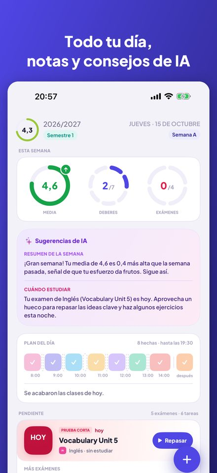
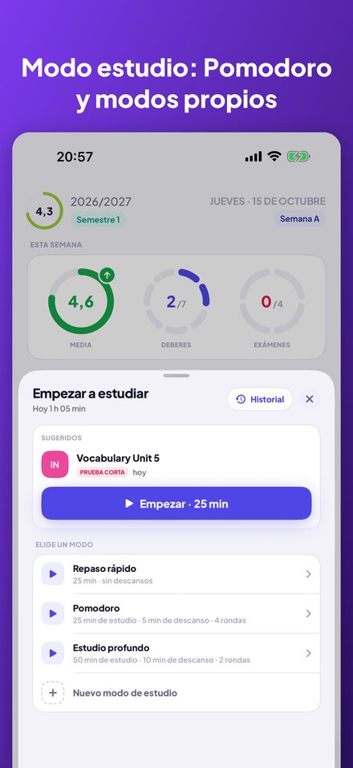
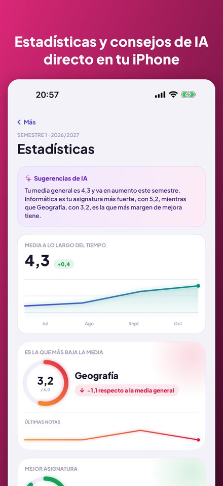
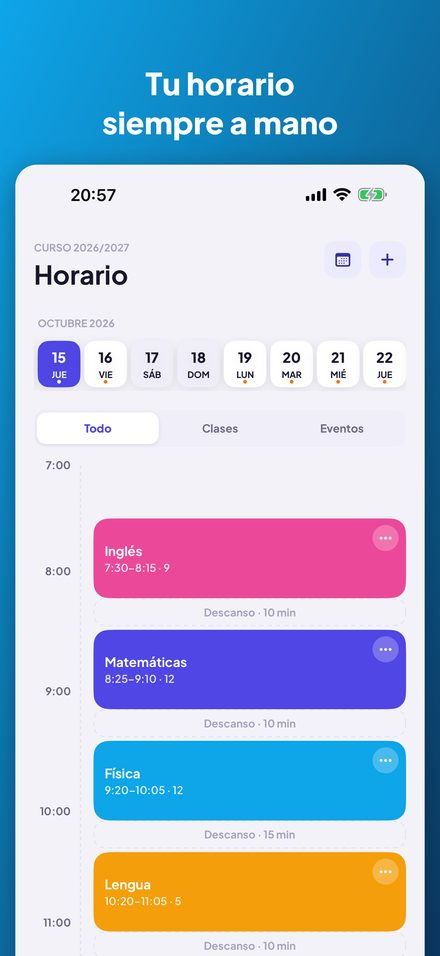
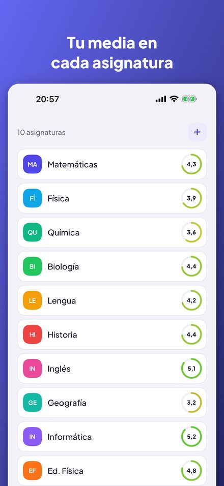
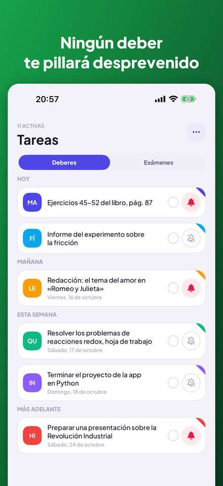

Kajet es un planificador para el colegio y la universidad. Todo tu día de un vistazo, notas con media, deberes y exámenes con recordatorios y un temporizador de estudio con Pomodoro. Sin cuenta, sin anuncios.






Anillos con la media de la semana, los deberes y los exámenes, una línea de tiempo de las clases de hoy y una lista de pendientes que marcas con un toque.
Vista de día y de semana, semanas A y B, clases canceladas, sustituciones, cambios de aula y actividades extraescolares con un recordatorio de cuándo salir.
Media simple o ponderada con tus propias categorías, recuperaciones y comentarios. Las estadísticas muestran tu tendencia, tu mejor asignatura y la que más te baja.
Créditos ECTS, notas finales, la media ponderada por ECTS y tu propio umbral de beca, con las notas que aún te faltan para alcanzarlo.
Agrupados en hoy, mañana y esta semana, con recordatorios con uno o tres días de antelación. Un examen se convierte en nota en un solo paso.
Un temporizador con tus propios modos: cuenta atrás o Pomodoro con rondas y descansos. Vincula una sesión a un examen y consulta tu historial.
La próxima clase en la pantalla de inicio y la de bloqueo. Pregunta a Siri por tu próxima clase, los deberes de hoy o tu media, o añade una nota por voz.
Sin cuenta, sin anuncios y con tus datos en tu iPhone. Los consejos de IA opcionales funcionan por completo en el dispositivo con Apple Intelligence.
Pensada para el sistema escolar y universitario polaco (notas del 1 al 6, escala universitaria de 2,0 a 5,0, ECTS), pero útil en cualquier lugar. Disponible en inglés, polaco, alemán, francés, español, italiano, japonés y chino. Para iPhone con iOS 17 o posterior; los consejos de IA requieren iOS 26 y Apple Intelligence.